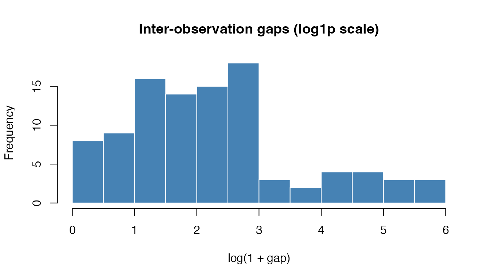
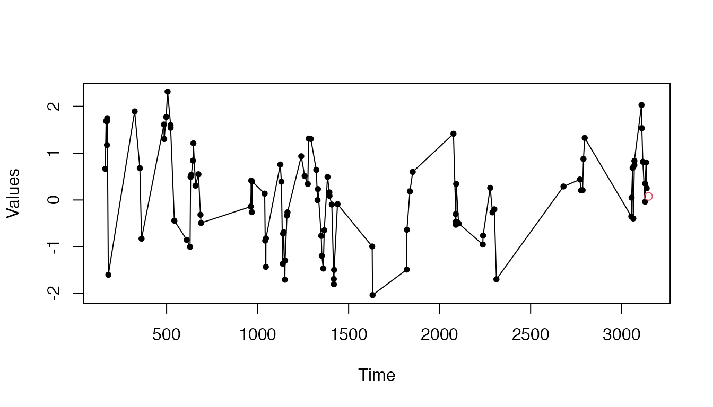
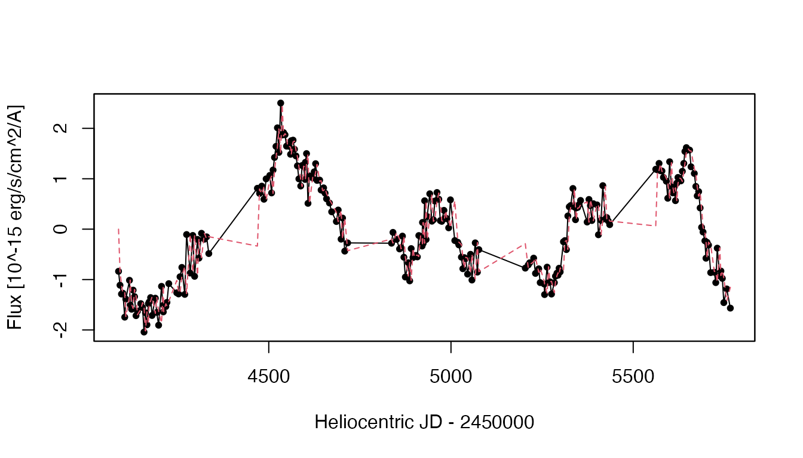

Getting Started with iAR
Overview
The iAR package provides autoregressive models for time series observed at irregularly spaced time points, a common situation in astronomy, finance, and environmental science. It implements three complementary model classes:
| Class | Coefficient | Autocorrelation | Reference |
|---|---|---|---|
iAR |
Scalar \(`\phi \in (0,1)`\) | Positive only | Eyheramendy et al. (2018) |
CiAR |
Vector \(`(\phi_R, \phi_I)`\), \(`\|\phi\| < 1`\) | Positive and negative | Elorrieta et al. (2019) |
BiAR |
Vector \(`(\phi_R, \phi_I)`\), \(`\|\phi\| < 1`\) | Bivariate, cross-correlated | Elorrieta et al. (2021) |
All three share the same workflow: construct → simulate → estimate → forecast / interpolate.
library(iAR)Generating Irregular Observation Times
Real astronomical or environmental data is rarely sampled on a regular grid. The gentime() function generates realistic irregular time grids from several distributions. The first argument x defaults to NULL, so the utilities object is created internally and you can call gentime() directly without any setup step.
set.seed(2847)
# x defaults to NULL — no setup needed
times <- gentime(n = 100)@times
cat("Number of observations:", length(times), "\n")
#> Number of observations: 100
cat("Time span: [", round(min(times), 1), ",", round(max(times), 1), "]\n")
#> Time span: [ 162.8 , 3137.7 ]
cat("Mean gap between observations:", round(mean(diff(times)), 2), "\n")
#> Mean gap between observations: 30.05The default distribution ("expmixture") mixes two exponential distributions, mimicking data sets where most observations are closely spaced but occasional long gaps occur. Alternative distributions include "uniform", "exponential", and "gamma".
gaps <- diff(times)
hist(log1p(gaps),
main = "Inter-observation gaps (log1p scale)",
xlab = "log(1 + gap)", col = "steelblue", border = "white",
breaks = 20)
Distribution of inter-observation gaps (log scale) for 100 irregular times drawn from an exponential mixture.
iAR: Univariate Irregular Autoregressive Model
Simulation
Construct an iAR object with the desired coefficient, then call sim().
set.seed(2847)
times <- gentime(n = 100)@times
# Build the model: family = "norm", phi = 0.9
m_iar <- iAR(family = "norm", times = times, coef = 0.9)
m_iar <- sim(m_iar)
head(m_iar@series)
#> [1] 0.6949442 1.7577536 1.2249041 1.7570633 1.8224373 -1.6668806
plot(m_iar, type = "o",main = "Simulated iAR series (phi = 0.9)",ylab="Values",xlab="Time",pch=20)Simulated iAR series (phi = 0.9). The irregular spacing is visible in the unequal distances along the x-axis.
Parameter Estimation
Two estimators are available:
loglik()— direct MLE; supports all three families ("norm","t","gamma").kalman()— Kalman-filter MLE; available for all three model classes (iAR,CiAR,BiAR).
Before estimation, standardise the series (zero mean, unit variance) and supply a vector of error standard deviations. For simulated data with no measurement noise, zeros suffice.
y <- m_iar@series
y_std <- y / sd(y) # unit variance
m_iar@series <- y_std
m_iar@series_esd <- rep(0, length(times))Using loglik()
m_loglik <- loglik(m_iar)
cat("loglik estimate: phi =", round(m_loglik@coef, 4), "\n")
#> loglik estimate: phi = 0.8883
cat("Log-likelihood: ", round(m_loglik@loglik, 4), "\n")
#> Log-likelihood: 111.6524Using kalman()
m_kalman <- kalman(m_iar)
cat("kalman estimate: phi =", round(m_kalman@coef, 4), "\n")
#> kalman estimate: phi = 0.8876
cat("Kalman log-lik: ", round(m_kalman@kalmanlik, 4), "\n")
#> Kalman log-lik: 0.4045Both estimators should recover a value close to the true \(`\phi = 0.9`\).
Standard Errors via the Hessian
Set hessian = TRUE to obtain standard errors and p-values.
m_h <- iAR(family = "norm", times = times, coef = 0.9, hessian = TRUE)
m_h@series <- y_std
m_h@series_esd <- rep(0, length(times))
m_h <- loglik(m_h)
# Summary contains the coefficient, SE, p-value, information criteria, and residual diagnostics
summary(m_h)
#> iAR model
#>
#> Family:
#> norm
#>
#> Coefficients:
#> Estimate St. Error t value Pr(>|t|)
#> phi 0.89 0.02 38.71 0.00
#>
#> Information criteria:
#> AIC: 225.30
#> BIC: 227.91
#> Residual diagnostics:
#> ACF lag 1: 0.06
#> Ljung-Box test p-value (lag=1): 0.57
#> Ljung-Box test p-value (lag=10): 0.98Forecasting
After estimation, use forecast() to predict tAhead time units into the future.
m_fc <- forecast(m_kalman, tAhead = 10)
cat("Forecast (10 time units ahead):", round(m_fc@forecast, 4), "\n")
#> Forecast (10 time units ahead): 0.0761
plot_forecast(m_fc,ylab="Values",xlab="Time",type="o",pch=20)
iAR series with one-step-ahead forecast (blue dot).
Interpolation (Imputing Missing Values)
interpolation() imputes NA values in the series using the fitted model.
# Introduce a missing value at position 10
m_interp <- m_kalman
m_interp@series[10] <- NA
m_interp <- interpolation(m_interp)
cat("Interpolated value at position 10:",
round(m_interp@interpolated_values, 4), "\n")
#> Interpolated value at position 10: 1.1321
cat("Original value at position 10 :",
round(y_std[10], 4), "\n")
#> Original value at position 10 : 1.6115CiAR: Complex Irregular Autoregressive Model
CiAR extends iAR to allow negative autocorrelation via a complex coefficient \(`\phi = \phi_R + i\,\phi_I`\). The stationarity condition is \(`|\phi| = \sqrt{\phi_R^2 + \phi_I^2} < 1`\).
Simulation and Estimation
set.seed(2847)
times <- gentime(n = 100)@times
# phi = (0.9, 0): purely real CiAR — same as iAR but more general
m_ciar <- CiAR(times = times, coef = c(0.9, 0))
m_ciar <- sim(m_ciar)
# Standardise
y_c <- m_ciar@series
y_c_std <- y_c / sd(y_c)
m_ciar@series <- y_c_std
m_ciar@series_esd <- rep(0, length(times))
m_ciar <- kalman(m_ciar)
cat("CiAR estimate: phiR =", round(m_ciar@coef[1], 4),
" phiI =", round(m_ciar@coef[2], 4), "\n")
#> CiAR estimate: phiR = 0.9076 phiI = 0
cat("Modulus |phi| =", round(sqrt(sum(m_ciar@coef^2)), 4), "\n")
#> Modulus |phi| = 0.9076Forecasting
m_ciar <- forecast(m_ciar, tAhead = 10)
cat("CiAR forecast:", round(m_ciar@forecast, 4), "\n")
#> CiAR forecast: 0.8211BiAR: Bivariate Irregular Autoregressive Model
BiAR models two time series observed at the same irregular time points with a shared autoregressive structure and cross-correlation \(`\rho`\).
Simulation
set.seed(2847)
times <- gentime(n = 100)@times
# coef = c(phiR, phiI), rho = cross-series correlation
m_biar <- BiAR(times = times, coef = c(0.9, 0.3), rho = 0.9)
m_biar <- sim(m_biar)
head(m_biar@series) # matrix: column 1 = series 1, column 2 = series 2
#> [,1] [,2]
#> [1,] 0.9385191 1.4786262
#> [2,] -0.5465484 1.6675406
#> [3,] -0.8640927 0.5525127
#> [4,] -0.9372092 0.3941008
#> [5,] -0.9733738 0.1221019
#> [6,] -0.6999326 -0.9973335Estimation
n <- length(times)
y_b <- m_biar@series
y_b_std <- y_b / matrix(apply(y_b, 2, sd), nrow = n, ncol = 2, byrow = TRUE)
m_biar@series <- y_b_std
m_biar@series_esd <- matrix(0, n, 2)
m_biar <- kalman(m_biar)
cat("BiAR estimate: phiR =", round(m_biar@coef[1], 4),
" phiI =", round(m_biar@coef[2], 4), "\n")
#> BiAR estimate: phiR = 0.9208 phiI = 0.2989Forecasting
m_biar <- forecast(m_biar, tAhead = 10)
cat("BiAR forecast (series 1):", round(m_biar@forecast[1], 4), "\n")
#> BiAR forecast (series 1): -0.2926
cat("BiAR forecast (series 2):", round(m_biar@forecast[2], 4), "\n")
#> BiAR forecast (series 2): 0.3773Real Data Example: AGN Light Curve
The package includes the agn dataset — 237 K-band flux measurements of the active galactic nucleus MCG-6-30-15, taken between 2006 and 2011.
data(agn)
head(agn)
#> t m merr
#> 1 4087.834 2.878444e-15 6.709391e-17
#> 2 4091.857 2.803222e-15 6.377840e-17
#> 3 4095.849 2.755297e-15 6.256418e-17
#> 4 4099.835 2.759666e-15 6.825679e-17
#> 5 4104.821 2.629979e-15 6.472206e-17
#> 6 4107.828 2.728070e-15 6.211146e-17
plot(agn$t, agn$m, xlab = "Heliocentric JD - 2450000",
ylab = "Flux [10^-15 erg/s/cm^2/A]",
main = "AGN MCG-6-30-15 (K band)",type="o",pch=20)AGN MCG-6-30-15 light curve. Gaps in the observation schedule produce the irregular spacing typical of ground-based astronomical surveys.
Fitting an iAR Model
# Standardise: centre and scale by SD (measurement errors available)
y_agn <- agn$m
y_agn_c <- (y_agn - mean(y_agn)) / sd(y_agn)
esd_agn <- agn$merr / sd(y_agn)
m_agn <- iAR(
family = "norm",
times = agn$t,
series = y_agn_c,
series_esd = esd_agn
)
m_agn <- kalman(m_agn)
#> Warning: Estimated coefficient (0.9973) is near the upper boundary of (0, 1).
#> The model may be near non-stationary; results should be interpreted with
#> caution.
cat("Estimated phi:", round(m_agn@coef, 4), "\n")
#> Estimated phi: 0.9973
cat("Kalman log-lik:", round(m_agn@kalmanlik, 4), "\n")
#> Kalman log-lik: -1.2607Fitted Values and Forecast
m_agn <- fit(m_agn)
plot_fit(m_agn, xlab = "Heliocentric JD - 2450000",
ylab = "Flux [10^-15 erg/s/cm^2/A]",type="o",pch=20)
AGN light curve (standardised) with fitted iAR values overlaid.
m_agn <- forecast(m_agn, tAhead = 1)
cat("One-step-ahead forecast:", round(m_agn@forecast, 4), "\n")
#> One-step-ahead forecast: -1.5625Utility: Pairing Two Irregular Time Series
When two series are observed at different (but overlapping) time points, pairingits() matches them within a tolerance window before fitting a BiAR model.
data(cvnovag)
data(cvnovar)
# Pair the G-band and R-band CV Nova light curves
paired <- pairingits(data1 = cvnovag, data2 = cvnovar, tol = 0.01)
cat("Paired observations:", nrow(paired@paired), "\n")
#> Paired observations: 129
head(paired@paired)
#> t m merr
#> [1,] NA NA NA 58278.29 18.32443 0.05345725
#> [2,] NA NA NA 58281.32 18.34270 0.05294770
#> [3,] NA NA NA 58284.33 18.46952 0.06193419
#> [4,] NA NA NA 58287.29 18.41748 0.05424246
#> [5,] 58290.23 18.64738 0.1674221 NA NA NA
#> [6,] 58293.34 18.39692 0.1456636 NA NA NASummary
The table below collects the key functions for each step of the modelling workflow.
| Step | iAR | CiAR | BiAR |
|---|---|---|---|
| Construct | iAR(family, times, coef) |
CiAR(times, coef) |
BiAR(times, series, coef, rho) |
| Simulate | sim(m) |
sim(m) |
sim(m) |
| Estimate (direct MLE) | loglik(m) |
— | — |
| Estimate (Kalman) | kalman(m) |
kalman(m) |
kalman(m) |
| Forecast | forecast(m, tAhead) |
forecast(m, tAhead) |
forecast(m, tAhead) |
| Interpolate | interpolation(m) |
interpolation(m) |
interpolation(m) |
| Plot fitted | plot_fit(m) |
plot_fit(m) |
plot_fit(m) |
| Plot forecast | plot_forecast(m) |
plot_forecast(m) |
plot_forecast(m) |
| Generate times | gentime(n = ...) |
— | — |
| Pair two series | pairingits(data1, data2) |
— | — |
References
Eyheramendy, S., Elorrieta, F., & Palma, W. (2018). An irregular discrete time series model to identify residuals with autocorrelation in astronomical light curves. Monthly Notices of the Royal Astronomical Society, 481(4), 4990–5003. doi:10.1093/mnras/sty2487
Elorrieta, F., Eyheramendy, S., & Palma, W. (2019). Discrete semi-parametric model for the investigation of variable stars. Astronomy & Astrophysics, 627, A120. doi:10.1051/0004-6361/201935560
Elorrieta, F., Eyheramendy, S., Palma, W., & Ojeda, C. (2021). A bivariate irregular autoregressive model. Monthly Notices of the Royal Astronomical Society, 505(1), 1105–1116. doi:10.1093/mnras/stab1216